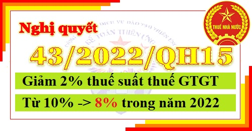

Ngày 11/01/2022 Quốc hội ban hành Nghị quyết 43/2022/QH15: Giảm 2% thuế suất thuế GTGT trong năm 2022 từ 10% xuống còn 8% đối với các nhóm hàng hóa, dịch vụ đang áp dụng thuế 10% (trừ 1 số nhóm hàng hóa, dịch vụ).

|
QUỐC HỘI -------- |
CỘNG HÒA XÃ HỘI CHỦ NGHĨA VIỆT NAM Độc lập - Tự do - Hạnh phúc --------------- |
| Nghị quyết số: 43/2022/QH15 | Hà Nội, ngày 11 tháng 01 năm 2022 |
NGHỊ QUYẾT
VỀ CHÍNH SÁCH TÀI KHÓA, TIỀN TỆ HỖ TRỢ CHƯƠNG TRÌNH PHỤC HỒI VÀ PHÁT TRIỂN KINH TẾ - XÃ HỘI
QUỐC HỘI
Căn cứ Hiến pháp nước Cộng hòa xã hội chủ nghĩa Việt Nam;VỀ CHÍNH SÁCH TÀI KHÓA, TIỀN TỆ HỖ TRỢ CHƯƠNG TRÌNH PHỤC HỒI VÀ PHÁT TRIỂN KINH TẾ - XÃ HỘI
QUỐC HỘI
Căn cứ Luật Tổ chức Quốc hội số 57/2014/QH13 đã được sửa đổi, bổ sung một số điều theo Luật số 65/2020/QH14;
Trên cơ sở xem xét Tờ trình số 02/TTr-CP ngày 02 tháng 01 năm 2022 của Chính phủ, Báo cáo thẩm tra số 604/BC-UBKT15 ngày 03 tháng 01 năm 2022 của Ủy ban Kinh tế, Báo cáo số 106/BC-UBTVQH15 ngày 11 tháng 01 năm 2022 của Ủy ban Thường vụ Quốc hội về tiếp thu, chỉnh lý, giải trình về dự thảo Nghị quyết về chính sách tài khóa, tiền tệ hỗ trợ Chương trình phục hồi và phát triển kinh tế - xã hội, các tài liệu liên quan và ý kiến của các vị đại biểu Quốc hội;
QUYẾT NGHỊ:
1. Bám sát chủ trương, định hướng của Đảng, các nghị quyết của Quốc hội, kiên trì giữ vững ổn định kinh tế vĩ mô, nâng cao năng suất, chất lượng, năng lực cạnh tranh, tính tự chủ, khả năng chống chịu, thích ứng của nền kinh tế, đáp ứng kịp thời nhu cầu trước mắt và lâu dài, gắn kết chặt chẽ với Kế hoạch phát triển kinh tế - xã hội 5 năm 2021 - 2025, Kế hoạch phát triển kinh tế - xã hội hằng năm, Kế hoạch cơ cấu lại nền kinh tế giai đoạn 2021 - 2025, Kế hoạch tài chính quốc gia và vay, trả nợ công 5 năm giai đoạn 2021 - 2025, Kế hoạch đầu tư công trung hạn giai đoạn 2021 - 2025 và Chương trình phòng, chống dịch COVID-19.
2. Điều hành linh hoạt, phối hợp chặt chẽ, hài hòa, hiệu quả chính sách tài khóa, tiền tệ và các chính sách vĩ mô khác; kiểm soát chặt chẽ lạm phát, bảo đảm các cân đối lớn của nền kinh tế; chỉ tăng bội chi ngân sách nhà nước để tăng chi đầu tư phát triển và bảo đảm cân đối ngân sách nhà nước khi thực hiện giải pháp miễn, giảm thuế để hỗ trợ Chương trình phục hồi và phát triển kinh tế - xã hội (sau đây gọi là Chương trình).
3. Chính sách hỗ trợ Chương trình có quy mô, nguồn lực đủ lớn, tác động cả phía cung và phía cầu; có mục tiêu trọng tâm, trọng điểm, xác định đúng đối tượng cần hỗ trợ để giải quyết những vấn đề cấp bách, tránh dàn trải, lãng phí nguồn lực gắn với trách nhiệm của các tổ chức, cá nhân, người đứng đầu và cấp ủy, chính quyền các cấp.
4. Chính sách, giải pháp hỗ trợ phải khả thi, kịp thời, hiệu quả, thời gian thực hiện chủ yếu trong 2 năm 2022 và 2023 với lộ trình thích hợp để nâng cao năng lực phòng, chống dịch COVID-19, phục hồi và phát triển kinh tế - xã hội; nguồn lực đưa ra có khả năng giải ngân, hấp thụ nhanh.
5. Huy động, phân bổ và quản lý hiệu quả các nguồn lực; cân đối hợp lý giữa các vùng, miền, địa phương, lĩnh vực, đối tượng ưu tiên; dễ thực hiện, dễ kiểm tra, giám sát, đánh giá; chống tiêu cực, tham nhũng, lợi ích nhóm, trục lợi chính sách; bảo đảm hiệu quả, công bằng, công khai, minh bạch.
Điều 2. Mục tiêu, chỉ tiêu
1. Phục hồi, phát triển nhanh hoạt động sản xuất, kinh doanh, thúc đẩy các động lực tăng trưởng, ưu tiên một số ngành, lĩnh vực quan trọng, phấn đấu đạt mục tiêu của giai đoạn 2021 - 2025: tăng trưởng GDP bình quân 6,5 - 7%/năm, chỉ tiêu nợ công dưới mức cảnh báo Quốc hội cho phép tại Nghị quyết số 23/2021/QH15, tỷ lệ thất nghiệp ở khu vực thành thị dưới 4%; giữ vững ổn định kinh tế vĩ mô, bảo đảm các cân đối lớn trong trung hạn và dài hạn.
2. Tiết giảm chi phí, hỗ trợ dòng tiền, bảo đảm tính chủ động, tạo thuận lợi cho doanh nghiệp, các tổ chức kinh tế và người dân.
3. Phòng, chống dịch COVID-19 hiệu quả; bảo đảm an sinh xã hội và đời sống của người dân, nhất là người lao động, người nghèo, người yếu thế, đối tượng chịu ảnh hưởng nặng nề bởi dịch bệnh; bảo đảm quốc phòng, an ninh, trật tự, an toàn xã hội.
Điều 3. Chính sách hỗ trợ Chương trình phục hồi và phát triển kinh tế - xã hội
1. Chính sách tài khóa:
1.1. Chính sách miễn, giảm thuế:
a) Giảm 2% thuế suất thuế giá trị gia tăng trong năm 2022, áp dụng đối với các nhóm hàng hóa, dịch vụ đang áp dụng mức thuế suất thuế giá trị gia tăng 10% (còn 8%), trừ một số nhóm hàng hóa, dịch vụ sau: viễn thông, công nghệ thông tin, hoạt động tài chính, ngân hàng, chứng khoán, bảo hiểm, kinh doanh bất động sản, kim loại, sản phẩm từ kim loại đúc sẵn, sản phẩm khai khoáng (không kể khai thác than), than cốc, dầu mỏ tinh chế, sản phẩm hoá chất, sản phẩm hàng hóa và dịch vụ chịu thuế tiêu thụ đặc biệt;
b) Cho phép tính vào chi phí được trừ khi xác định thu nhập chịu thuế thu nhập doanh nghiệp đối với khoản chi ủng hộ, tài trợ của doanh nghiệp, tổ chức cho các hoạt động phòng, chống dịch COVID-19 tại Việt Nam cho kỳ tính thuế năm 2022.
1.2. Chính sách đầu tư phát triển:
Tăng chi đầu tư phát triển từ nguồn ngân sách nhà nước tối đa 176 nghìn tỷ đồng, tập trung trong 2 năm 2022 và 2023, bao gồm:
a) Về y tế:
Bố trí tối đa 14 nghìn tỷ đồng để đầu tư xây mới, cải tạo, nâng cấp, hiện đại hóa hệ thống y tế cơ sở, y tế dự phòng, trung tâm kiểm soát bệnh tật cấp vùng, nâng cao năng lực phòng, chống dịch bệnh của viện và bệnh viện cấp trung ương gắn với đào tạo, nâng cao chất lượng nguồn nhân lực trong lĩnh vực y tế, sản xuất vắc-xin trong nước và thuốc điều trị COVID-19;
b) Về an sinh xã hội, lao động, việc làm:
- Cấp cho Ngân hàng Chính sách Xã hội tối đa 5 nghìn tỷ đồng, bao gồm cấp bù lãi suất và phí quản lý 2 nghìn tỷ đồng để thực hiện chính sách cho vay ưu đãi thuộc Chương trình; hỗ trợ lãi suất tối đa 3 nghìn tỷ đồng cho đối tượng vay vốn theo các chương trình tín dụng chính sách có lãi suất cho vay hiện hành trên 6%/năm;
- Đầu tư xây mới, cải tạo, nâng cấp, mở rộng và hiện đại hóa các cơ sở trợ giúp xã hội, đào tạo, dạy nghề, giải quyết việc làm tối đa 3,15 nghìn tỷ đồng;
c) Về hỗ trợ doanh nghiệp, hợp tác xã, hộ kinh doanh:
- Hỗ trợ lãi suất (2%/năm) tối đa 40 nghìn tỷ đồng thông qua hệ thống các ngân hàng thương mại cho một số ngành, lĩnh vực quan trọng, các doanh nghiệp, hợp tác xã, hộ kinh doanh có khả năng trả nợ, có khả năng phục hồi; cho vay cải tạo chung cư cũ, xây dựng nhà ở xã hội, nhà cho công nhân mua, thuê và thuê mua;
- Cấp vốn điều lệ cho Quỹ Hỗ trợ phát triển du lịch tối đa 300 tỷ đồng;
d) Về đầu tư phát triển kết cấu hạ tầng:
Bổ sung tối đa 113,55 nghìn tỷ đồng vốn đầu tư từ ngân sách nhà nước để phát triển kết cấu hạ tầng: giao thông, công nghệ thông tin, chuyển đổi số, phòng, chống sạt lở bờ sông, bờ biển, bảo đảm an toàn hồ chứa nước, thích ứng biến đổi khí hậu, khắc phục hậu quả thiên tai;
đ) Việc lựa chọn và phân bổ vốn cho các dự án thuộc Chương trình phải bảo đảm giải ngân vốn của Chương trình trong 2 năm 2022 và 2023, và tuân thủ các nguyên tắc, tiêu chí sau đây:
- Ưu tiên phân bổ vốn cho các dự án quan trọng quốc gia, các dự án trong danh mục Kế hoạch đầu tư công trung hạn giai đoạn 2021 - 2025 đang triển khai thực hiện, có khả năng hoàn thành sớm nhưng chưa được bố trí vốn hoặc chưa được bố trí đủ vốn;
- Trường hợp bố trí vốn cho các dự án nằm ngoài danh mục Kế hoạch đầu tư công trung hạn giai đoạn 2021 - 2025: chỉ bố trí cho các dự án quan trọng, cấp thiết, có tác động lan tỏa, có khả năng giải ngân nhanh và hấp thụ ngay vào nền kinh tế, phù hợp với quy hoạch, sử dụng nguồn vốn hiệu quả, bảo đảm khả năng cân đối vốn để hoàn thành dự án trong giai đoạn 2022 - 2025; đối với một số dự án mới có ý nghĩa quan trọng với phát triển kinh tế - xã hội thì ưu tiên hỗ trợ giải phóng mặt bằng;
- Các dự án phải bảo đảm đủ thủ tục đầu tư theo quy định;
- Bảo đảm công khai, minh bạch, công bằng, hài hòa giữa các vùng, miền, địa phương, lĩnh vực.
1.3. Chính sách tài khóa khác:
a) Hỗ trợ tiền thuê nhà cho người lao động có quan hệ lao động, đang ở thuê, ở trọ, làm việc trong các khu công nghiệp, khu chế xuất, khu vực kinh tế trọng điểm (sử dụng khoảng 6,6 nghìn tỷ đồng từ nguồn tăng thu, tiết kiệm chi ngân sách trung ương năm 2021);
b) Tăng hạn mức bảo lãnh Chính phủ đối với trái phiếu phát hành trong nước cho Ngân hàng Chính sách Xã hội tối đa 38,4 nghìn tỷ đồng để cho vay hỗ trợ giải quyết việc làm; học sinh, sinh viên; các cơ sở giáo dục mầm non, tiểu học ngoài công lập; cá nhân vay mua, thuê mua nhà ở xã hội, xây dựng mới hoặc cải tạo, sửa chữa nhà ở theo chính sách về nhà ở xã hội; thực hiện Chương trình mục tiêu quốc gia về phát triển kinh tế - xã hội vùng đồng bào dân tộc thiểu số và miền núi giai đoạn 2021 - 2030.
2. Chính sách tiền tệ:
a) Điều hành đồng bộ, linh hoạt các công cụ chính sách tiền tệ để góp phần giữ vững ổn định kinh tế vĩ mô, kiểm soát lạm phát, bảo đảm an toàn hệ thống các tổ chức tín dụng, hỗ trợ tích cực cho phục hồi và phát triển kinh tế - xã hội; nghiên cứu để giữ ổn định tỷ lệ tối đa vốn ngắn hạn cho vay trung và dài hạn, tính toán hợp lý tỷ lệ dự trữ bắt buộc, thực hiện nghiệp vụ thị trường mở, tái cấp vốn, chỉ đạo các tổ chức tín dụng tiếp tục tiết giảm chi phí hoạt động để phấn đấu giảm lãi suất cho vay khoảng 0,5% - 1% trong 2 năm 2022 và 2023, nhất là đối với lĩnh vực ưu tiên;
b) Tiếp tục cơ cấu lại thời hạn trả nợ và giữ nguyên nhóm nợ, miễn, giảm lãi vay đối với khách hàng bị ảnh hưởng bởi dịch COVID-19, theo dõi sát diễn biến kinh tế, thị trường tiền tệ để có giải pháp hỗ trợ doanh nghiệp, người dân phù hợp, đồng thời bảo đảm an toàn hoạt động của hệ thống các tổ chức tín dụng;
c) Điều tiết thanh khoản phù hợp, tạo điều kiện đẩy nhanh tốc độ giải ngân cho các đối tượng thụ hưởng gói hỗ trợ lãi suất;
d) Điều tiết tiền tệ hợp lý, phối hợp chặt chẽ với chính sách tài khóa, tạo điều kiện thuận lợi cho việc phát hành trái phiếu Chính phủ và để các tổ chức tín dụng tiếp tục đầu tư trái phiếu Chính phủ;
đ) Sử dụng tối đa 46 nghìn tỷ đồng từ các nguồn tài chính hợp pháp khác để nhập khẩu vắc - xin, thuốc điều trị và thiết bị, vật tư y tế phục vụ phòng, chống dịch COVID-19 trong trường hợp cần thiết;
e) Tiếp tục tái cấp vốn đối với Ngân hàng Chính sách Xã hội để cho người sử dụng lao động vay trả lương ngừng việc, trả lương phục hồi sản xuất cho người lao động, bảo đảm tính khả thi và tổ chức triển khai nhanh trong thực tế. Cân đối giải pháp về tiền tệ hỗ trợ Chương trình với tổng thể phương án cơ cấu lại các ngân hàng được kiểm soát đặc biệt.
3. Chính sách khác:
Áp dụng các chính sách khác để thực hiện Chương trình tập trung trong 2 năm 2022 và 2023, bao gồm:
a) Sử dụng khoảng 5 nghìn tỷ đồng từ Quỹ Dịch vụ viễn thông công ích Việt Nam để phát triển hạ tầng viễn thông, internet, trong đó sử dụng 1 nghìn tỷ đồng để trang bị máy tính bảng thực hiện Chương trình “Sóng và máy tính cho em”;
b) Giải quyết các vướng mắc trong quy định về nội dung chi và quản lý Quỹ Phát triển khoa học và công nghệ của doanh nghiệp; sử dụng khoảng 5 nghìn tỷ đồng để đổi mới công nghệ, ươm tạo công nghệ, ươm tạo doanh nghiệp khoa học công nghệ, thương mại hóa kết quả nghiên cứu khoa học và phát triển công nghệ; giải mã công nghệ; mua thiết bị, máy móc, nguyên vật liệu cho đổi mới công nghệ, phục vụ trực tiếp hoạt động sản xuất, kinh doanh của doanh nghiệp.
Điều 4. Phương án huy động nguồn lực
1. Để có nguồn lực thực hiện các chính sách tài khóa hỗ trợ Chương trình, cho phép tăng bội chi ngân sách nhà nước trong 2 năm 2022 và 2023 bình quân 1% - 1,2% GDP/năm (tối đa 240 nghìn tỷ đồng), trong đó: năm 2022, tăng khoảng 1,1% GDP (tối đa 102,8 nghìn tỷ đồng) so với dự toán đã được Quốc hội quyết định; năm 2023, Chính phủ tổng hợp kế hoạch và dự toán ngân sách nhà nước chung cho cả phần tăng thêm của Chương trình và của năm 2023, trình Quốc hội xem xét, quyết định theo quy định.
Nhu cầu nguồn lực cần được tính toán cụ thể trên cơ sở tận dụng tối đa các nguồn lực sẵn có, các nguồn tăng thu, tiết kiệm chi của ngân sách trung ương và khả năng giải ngân để xây dựng phương án huy động phù hợp từng thời điểm thông qua các công cụ sau đây:
a) Phát hành trái phiếu Chính phủ, bảo đảm nguyên tắc phối hợp chặt chẽ trong điều hành chính sách tiền tệ, chính sách tài khóa và các chính sách vĩ mô khác, giữ vững ổn định kinh tế vĩ mô, thị trường tài chính, tiền tệ và bảo đảm các cân đối lớn; phù hợp với khả năng trả nợ, giải ngân, khả năng hấp thụ của nền kinh tế, bảo đảm hiệu quả, tránh lãng phí. Ưu tiên phát hành trái phiếu Chính phủ trong nước bằng nội tệ, kỳ hạn phát hành bình quân có thể dưới 9 năm trong 2 năm 2022 và 2023. Trường hợp cần thiết phát hành bằng ngoại tệ, Chính phủ báo cáo cấp có thẩm quyền xem xét, quyết định trước khi triển khai;
b) Vay hỗ trợ phát triển chính thức (ODA), vay ưu đãi nước ngoài theo hình thức hỗ trợ cân đối ngân sách;
c) Trong trường hợp cần thiết, Chính phủ báo cáo cấp có thẩm quyền cho phép vay từ các nguồn tài chính hợp pháp khác phù hợp và hoàn trả khi có nguồn trong kế hoạch tài chính - ngân sách nhà nước hằng năm hoặc các nguồn khác theo quy định; cho phép phát hành trực tiếp trái phiếu Chính phủ cho Ngân hàng Nhà nước Việt Nam.
2. Đẩy mạnh các biện pháp khác để khai thác các nguồn lực, bao gồm:
a) Sử dụng tối đa, hiệu quả các nguồn lực trong các kế hoạch trung hạn giai đoạn 2021 - 2025; tiết kiệm, tiết giảm tối đa các khoản chi, điều chỉnh linh hoạt giữa các nhiệm vụ, khoản mục chi trong phạm vi thẩm quyền. Quản lý chặt chẽ các nguồn thu, phấn đấu tăng thu, triệt để tiết kiệm chi ngân sách nhà nước; đẩy mạnh lộ trình cải cách thuế, chống thất thu, chuyển giá, trốn thuế, giảm tỷ lệ nợ đọng thuế; hiện đại hóa hệ thống thuế, hải quan, kho bạc nhà nước, triển khai hóa đơn điện tử, tận dụng các dư địa tăng thu ngân sách nhà nước, nhất là dư địa tăng thu đối với các giao dịch số xuyên biên giới và các dịch vụ trên nền tảng số đang được cung cấp cho người tiêu dùng tại Việt Nam; triệt để thu hồi các khoản kinh phí chi thường xuyên chậm phân bổ, chậm triển khai;
b) Sử dụng linh hoạt các cơ chế, chính sách, công cụ phù hợp để huy động thêm nguồn lực thực hiện Chương trình; xây dựng phương án tăng thuế tiêu thụ đặc biệt đối với một số mặt hàng cần hạn chế tiêu dùng để kịp thời áp dụng trong thời gian thực hiện Chương trình; đẩy nhanh việc cổ phần hóa, thoái vốn nhà nước tại các doanh nghiệp nhà nước, nguồn vốn từ tổ chức Công đoàn và các tổ chức chính trị - xã hội; rà soát lại các quỹ tài chính ngoài ngân sách nhà nước, năng lực đầu tư của Tổng công ty Đầu tư và Kinh doanh vốn nhà nước để có kế hoạch huy động, sử dụng phù hợp; nghiên cứu có giải pháp huy động nguồn vốn ủy thác từ ngân sách địa phương cho Ngân hàng Chính sách Xã hội; quan tâm lồng ghép hiệu quả và đẩy nhanh giải ngân các Chương trình mục tiêu quốc gia, Chương trình mục tiêu hỗ trợ đầu tư y tế cơ sở tại các địa phương.
Điều 5. Áp dụng cơ chế đặc thù
1. Cho phép Thủ tướng Chính phủ, người đứng đầu cơ quan có thẩm quyền xem xét, quyết định việc chỉ định thầu trong 2 năm 2022 và 2023 đối với các gói thầu tư vấn, gói thầu phục vụ di dời hạ tầng kỹ thuật, gói thầu thực hiện đền bù, giải phóng mặt bằng và tái định cư, gói thầu xây lắp của các dự án quan trọng quốc gia, các dự án hạ tầng quan trọng có quy mô lớn, cấp bách về hạ tầng giao thông và y tế thuộc Chương trình; các nhà thầu thực hiện các gói thầu quy định tại khoản này đến khi hoàn thành dự án. Trình tự, thủ tục thực hiện chỉ định thầu thực hiện theo quy định của pháp luật về đấu thầu.
2. Trong 2 năm 2022 và 2023, nhà thầu thi công không phải thực hiện thủ tục cấp Giấy phép khai thác mỏ khoáng sản làm vật liệu xây dựng thông thường nằm trong Hồ sơ khảo sát vật liệu xây dựng phục vụ dự án hạ tầng giao thông quan trọng quốc gia thuộc Chương trình; việc khai thác mỏ khoáng sản quy định tại khoản này được thực hiện đến khi hoàn thành dự án. Nhà thầu thi công có trách nhiệm thực hiện đánh giá tác động môi trường; chịu sự quản lý, giám sát đối với việc khai thác, sử dụng khoáng sản; nộp thuế, phí và thực hiện các nghĩa vụ bảo vệ, cải tạo, phục hồi môi trường theo quy định của pháp luật.
3. Trong 2 năm 2022 và 2023, cho phép Thủ tướng Chính phủ xem xét, quyết định việc phân cấp cho Ủy ban nhân dân cấp tỉnh của địa phương có đủ năng lực, kinh nghiệm quản lý và có văn bản đề xuất làm cơ quan chủ quản thực hiện các đoạn tuyến đường cao tốc theo hình thức đầu tư công đi qua địa bàn thuộc Chương trình (trừ Dự án xây dựng công trình đường bộ cao tốc Bắc - Nam phía Đông giai đoạn 2021 - 2025 do Bộ Giao thông vận tải là cơ quan chủ quản thống nhất quản lý) trên cơ sở đã sử dụng tối đa năng lực của Bộ Giao thông vận tải. Cơ quan chủ quản quy định tại khoản này được thực hiện các đoạn tuyến đường cao tốc đến khi hoàn thành dự án.
Điều 6. Giao Chính phủ
1. Khẩn trương ban hành các giải pháp để thực hiện chính sách tài khóa, tiền tệ và các chính sách khác thuộc thẩm quyền theo quy định của pháp luật để thực hiện Chương trình; hướng dẫn tổ chức thực hiện các cơ chế quy định tại Điều 5 của Nghị quyết này gắn với trách nhiệm cụ thể, bảo đảm không để xảy ra việc trục lợi chính sách, lợi ích nhóm, thất thoát, lãng phí.
2. Trong điều hành, chỉ đạo huy động, phân bổ, quản lý và sử dụng nguồn lực phải tiết kiệm, hiệu quả, phù hợp với tiến độ thực hiện, giải ngân của các dự án, nhiệm vụ chi thuộc Chương trình; theo dõi chặt chẽ các chỉ số vĩ mô để có giải pháp kịp thời bảo đảm ổn định kinh tế vĩ mô, các cân đối lớn, trong đó đặc biệt chú trọng đến chỉ tiêu về lạm phát, nợ xấu; phấn đấu tăng thu, tiết kiệm chi; giảm bội chi để đạt được các chỉ tiêu trong Kế hoạch tài chính quốc gia và vay, trả nợ công 5 năm giai đoạn 2021 - 2025; trường hợp có biến động, rủi ro lớn, Chính phủ kịp thời báo cáo Quốc hội xem xét, quyết định.
3. Chỉ đạo xây dựng phương án phân bổ dự toán ngân sách nhà nước và bổ sung kế hoạch đầu tư công năm 2022 cho các chương trình, dự án thuộc Kế hoạch đầu tư công trung hạn giai đoạn 2021 - 2025 và các dự án thuộc Chương trình (bao gồm cả nội dung về Ngân hàng Chính sách Xã hội, Quỹ Hỗ trợ phát triển du lịch…); báo cáo Ủy ban Thường vụ Quốc hội xem xét, quyết định phân bổ, giao bổ sung dự toán theo quy định trước khi Chính phủ phân bổ, giao bổ sung dự toán và bổ sung kế hoạch đầu tư công năm 2022.
Chỉ đạo xây dựng phương án tăng vốn điều lệ từ nguồn lợi nhuận sau thuế, sau trích lập các quỹ giai đoạn 2021 - 2023 cho các ngân hàng thương mại cổ phần do Nhà nước nắm giữ trên 50% vốn điều lệ và từ nguồn ngân sách nhà nước đối với Ngân hàng Nông nghiệp và Phát triển nông thôn.
4. Căn cứ các nguyên tắc, tiêu chí quy định tại khoản 1 Điều 3 của Nghị quyết này, khẩn trương rà soát, hoàn thiện danh mục các dự án sử dụng nguồn vốn của Chương trình, báo cáo Ủy ban Thường vụ Quốc hội cho ý kiến trước khi phân bổ vốn. Bảo đảm điều hòa nguồn vốn đầu tư công trong Kế hoạch đầu tư công trung hạn giai đoạn 2021 - 2025 và nguồn vốn đầu tư công trong chính sách tài khóa, tiền tệ hỗ trợ Chương trình để ưu tiên vốn cho các dự án trọng điểm, có tác dụng lan tỏa, liên kết vùng, thúc đẩy tăng trưởng, có khả năng hấp thụ vốn. Trình Ủy ban Thường vụ Quốc hội xem xét, quyết định bổ sung dự toán ngân sách nhà nước và kế hoạch đầu tư công năm 2022, trình Quốc hội xem xét, quyết định bổ sung dự toán ngân sách nhà nước và kế hoạch đầu tư công năm 2023 theo quy định để đẩy nhanh tiến độ, hoàn thành giải ngân vốn của Chương trình trong 2 năm 2022 và 2023; bảo đảm nguồn vốn để triển khai, hoàn thành các dự án thành phần trong Dự án xây dựng công trình đường bộ cao tốc Bắc - Nam phía Đông giai đoạn 2021 - 2025.
5. Thực hiện đồng bộ, kịp thời, hiệu quả các nhiệm vụ, giải pháp chủ yếu của Chương trình. Trong quá trình điều hành, tiếp tục cân đối ngân sách trung ương để bổ sung nguồn lực thực hiện Chương trình phù hợp với điều kiện thực tế; kịp thời triển khai các giải pháp để huy động tối đa các nguồn lực hợp lý cho Chương trình.
6. Điều chỉnh linh hoạt giữa các nhiệm vụ chi của Chương trình theo quy định của pháp luật hiện hành đối với những nội dung thuộc thẩm quyền. Đối với những vấn đề thuộc thẩm quyền của Quốc hội phải báo cáo Quốc hội xem xét, quyết định; trường hợp cấp bách, trong thời gian giữa hai kỳ họp Quốc hội thì báo cáo Ủy ban Thường vụ Quốc hội xem xét, quyết định và báo cáo Quốc hội tại kỳ họp gần nhất.
7. Chủ động, khẩn trương ban hành và tổ chức thực hiện có hiệu quả, đồng bộ Chương trình phòng, chống dịch COVID-19 và các quy định có liên quan; cắt, giảm, đơn giản hóa thủ tục hành chính, cải thiện môi trường đầu tư, kinh doanh; tập trung tháo gỡ các vướng mắc về cơ chế, chính sách, pháp luật liên quan đến nhà ở xã hội, nhà ở cho công nhân; có chính sách đột phá, ưu tiên khuyến khích đổi mới sáng tạo, chuyển đổi số, kinh tế số, kinh tế xanh, kinh tế tuần hoàn gắn với phát triển bền vững.
8. Nghiên cứu phương án cho phép doanh nghiệp được trừ bổ sung theo tỷ lệ nhất định trên cơ sở chi phí thực tế khi tính thuế thu nhập doanh nghiệp, áp dụng đối với chi phí tạo tài sản cố định và chi phí lao động; phương án tăng thuế đối với giao dịch chứng khoán, bất động sản, báo cáo Ủy ban Thường vụ Quốc hội xem xét, quyết định.
9. Tăng cường thanh tra, kiểm tra, hướng dẫn nội bộ ngay từ đầu để không xảy ra sai sót, tham nhũng, lãng phí, tiêu cực và xử lý nghiêm các hành vi vi phạm, nhất là trong bối cảnh bố trí nguồn lực lớn trong khoảng thời gian ngắn.
10. Chú trọng công tác thông tin, truyền thông, góp phần tạo sự đồng thuận xã hội, khơi dậy, phát huy sức mạnh đại đoàn kết toàn dân tộc, hệ thống chính trị.
Điều 7. Tổ chức thực hiện
1. Chính phủ, các Bộ, cơ quan trung ương và địa phương đề cao trách nhiệm, nhất là trách nhiệm người đứng đầu trong lãnh đạo, chỉ đạo tổ chức, triển khai thực hiện các nội dung, chính sách quy định tại Nghị quyết này, bảo đảm đúng quan điểm, mục tiêu, công khai, minh bạch, hiệu quả, khả thi và tiến độ; không để trục lợi chính sách, thất thoát, lãng phí.
2. Ủy ban Thường vụ Quốc hội, Hội đồng Dân tộc và các Ủy ban của Quốc hội, các Đoàn đại biểu Quốc hội, đại biểu Quốc hội, Hội đồng nhân dân các tỉnh, thành phố trực thuộc Trung ương, Mặt trận Tổ quốc Việt Nam và các tổ chức thành viên, trong phạm vi nhiệm vụ, quyền hạn của mình, giám sát việc thực hiện Nghị quyết này.
3. Kiểm toán nhà nước tổ chức thực hiện kiểm toán hằng năm việc tổ chức thực hiện Chương trình, bảo đảm thực hiện nhanh, hiệu quả, công khai, minh bạch, chống tiêu cực, tham nhũng, lợi ích nhóm, báo cáo Quốc hội tại kỳ họp cuối các năm 2022, 2023 và kỳ họp giữa năm 2024.
Điều 8. Điều khoản thi hành
1. Nghị quyết này có hiệu lực thi hành từ ngày 11 tháng 01 năm 2022 đến ngày 31 tháng 12 năm 2023; riêng đối với chính sách tài khóa quy định tại các điểm 1.2 và 1.3 khoản 1 Điều 3 của Nghị quyết này được áp dụng cho năm ngân sách 2022 và 2023.
2. Chính phủ hướng dẫn, tổ chức thực hiện Nghị quyết này; báo cáo Quốc hội tại kỳ họp cuối các năm 2022 và 2023, báo cáo tổng kết tại kỳ họp giữa năm 2024.
Nghị quyết này được Quốc hội nước Cộng hòa xã hội chủ nghĩa Việt Nam khóa XV, kỳ họp bất thường lần thứ nhất thông qua ngày 11 tháng 01 năm 2022.
|
CHỦ TỊCH QUỐC HỘI
Vương Đình Huệ
|
----------------------------------------------------------------------------
Tải Nghị quyết 43/2022/QH15 tại đây:
Nếu bạn không tải về được thì làm theo cách sau:
Bước 1: Để lại mail vào phần bình luận bên dưới
Bước 2: Gửi yêu cầu vào mail: ketoandieutam@gmail.com (Tiêu đề ghi rõ Tài liệu muốn tải)
--------------------------------------------------------------------------